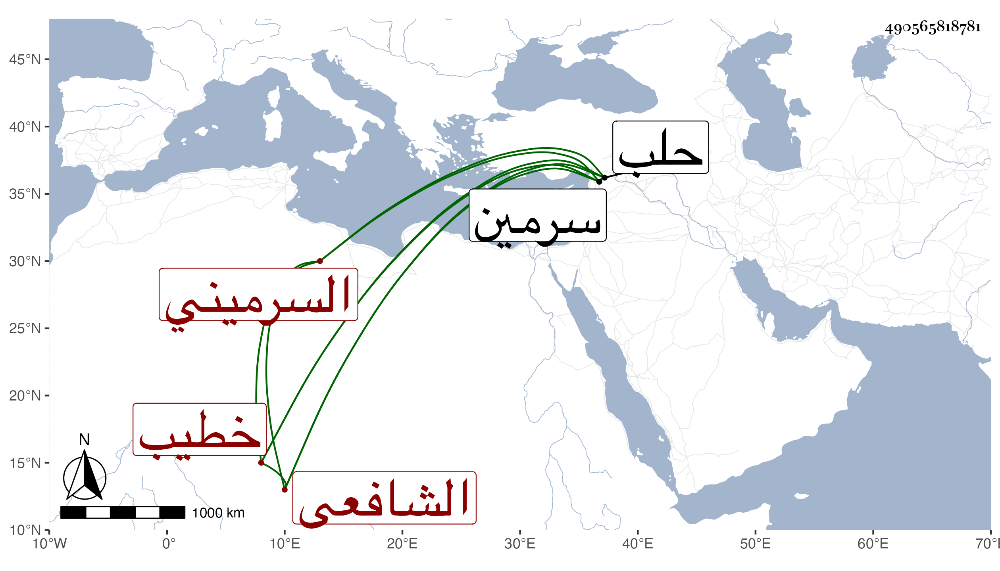

0902Sakhawi.DawLamic.ITO20230111-ara1.EIS1600.490565818781
Biography ID: 490565818781
654
خاطر بن علي بن ربيعة بن وحشي بن خليفة بن عمرو السرميني الشافعي خطيب قرية الحراجة من غربيات حلب . ولد في المحرم سنة أربع وثمانين وسبعمائة بسرمين واشتغل في الفقه والنحو على العز الحاضري ووصفه النجم بن فهد في معجمه بالذكاء والخير والديانة والكرم وتمام المروءة قال وله نظم حسن جيد مع إلمام بعلم العروض انتهى ، وكتب عنه . مات سنة اثنتي عشرة فإن صح فلعله بعد مولد النجم ويكون قد أجازه فيها .
